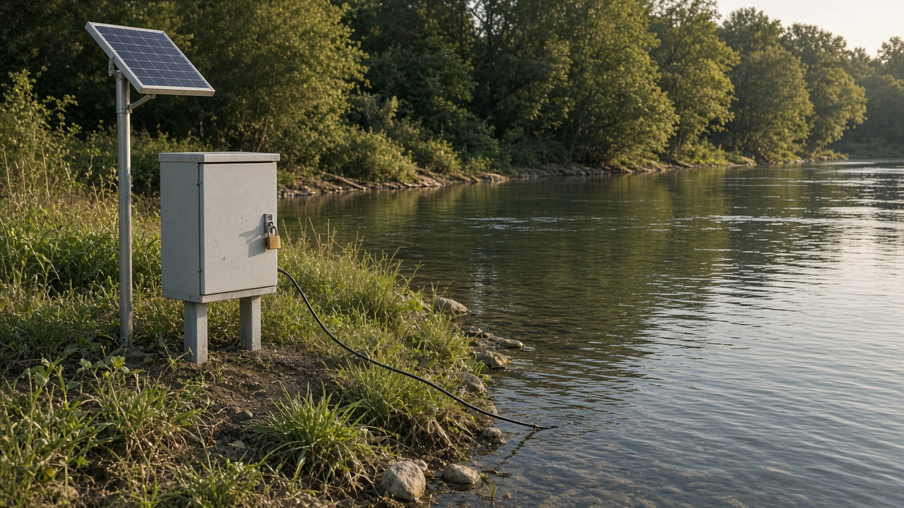

Monitoring, Enforcement, and Policy Evaluation
Published on August 20, 2026

Monitoring is the systematic collection of data on emissions, ambient quality, land change, and compliance behavior. Enforcement is the set of inspections, notices, fines, closures, and prosecutions that give rules a consequence. Policy evaluation asks whether an instrument caused the change it claimed, using baselines, comparison groups, or transparent before-after evidence. Without these three functions, statutes and prices are announcements. Risk-based inspection that focuses on large or historically non-compliant sources stretches thin staff further than random visits to every shop.
Credible enforcement is predictable, not theatrical. Graduated sanctions, published penalty schedules, and the right to appeal reduce both corruption and fatalism. Self-monitoring by large plants, with audits and remote sensors, can complement scarce inspectors if falsification is punished. Citizen complaints and open data extend eyes, but they cannot replace legal authority to enter a site. Evaluation should be built into new instruments: define the outcome, the lag, and who will analyze the data before the law is passed, not after a mid-term review needs a success story.
Many environmental programs report activities—workshops held, licenses issued—rather than outcomes such as reduced load or restored flow. Independent evaluation, including by audit offices and universities, protects ministries from their own brochures. A fine that is never collected is a subsidy; a standard without a laboratory method is incomplete. The last mile of environmental economics is not a new instrument on paper; it is whether someone measures, someone sanctions, and someone is willing to revise the policy when the evidence says it failed. That loop turns governance from a filing cabinet into a learning system.
अनुगमन उत्सर्जन, परिवेश गुणस्तर, भूमि परिवर्तन र पालना व्यवहारबारे तथ्याङ्कको व्यवस्थित सङ्कलन हो। कार्यान्वयन निरीक्षण, सूचना, जरिवाना, बन्द र अभियोजनको समूह हो जसले नियमलाई परिणाम दिन्छ। नीति मूल्याङ्कन सोध्छ औजारले दाबी गरेको परिवर्तन साँच्चै गरायो कि, आधार रेखा, तुलना समूह वा पारदर्शी अघि-पछि प्रमाण प्रयोग गरेर। यी तीन कार्य बिना ऐन र मूल्य घोषणा मात्र हुन्। ठूला वा ऐतिहासिक रूपमा पालना नगर्ने स्रोतमा केन्द्रित जोखिम-आधारित निरीक्षणले पातलो कर्मचारीलाई हरेक पसलको अनियम भ्रमणभन्दा टाढा तान्छ।
विश्वसनीय कार्यान्वयन अनुमानयोग्य हुन्छ, नाटकीय होइन। क्रमिक सजाय, प्रकाशित जरिवाना तालिका र पुनरावेदन अधिकारले भ्रष्टाचार र नियतिवाद दुवै घटाउँछन्। ठूला संयन्त्रको स्व-अनुगमन, लेखा परीक्षण र टाढाका संवेदकसँग, किर्तेमा सजाय भयो भने दुर्लभ निरीक्षक पूरक हुन सक्छ। नागरिक उजुरी र खुला तथ्याङ्कले आँखा फैलाउँछन् तर स्थल छिर्ने कानुनी अधिकारको ठाउँ लिन सक्दैनन्। मूल्याङ्कन नयाँ औजारमा बनाइनुपर्छ: कानुन जानुअघि नतिजा, ढिलाइ र तथ्याङ्क कसले विश्लेषण गर्छ परिभाषित गर्नु, मध्यावधि समीक्षालाई सफलता कथा चाहिएपछि होइन।
धेरै वातावरण कार्यक्रमले घटाइएको भार वा पुनर्स्थापित बहाव जस्ता नतिजा होइन कार्यशाला भयो, इजाजत जारी भयो जस्ता क्रियाकलाप रिपोर्ट गर्छन्। लेखा कार्यालय र विश्वविद्यालय सहित स्वतन्त्र मूल्याङ्कनले मन्त्रालयलाई आफ्नै पुस्तिकाबाट जोगाउँछ। कहिल्यै नउठाएको जरिवाना अनुदान हो; प्रयोगशाला विधि बिनाको मापदण्ड अधुरो हो। वातावरण अर्थशास्त्रको अन्तिम माइल कागजमा नयाँ औजार होइन; कसैले नाप्छ, कसैले सजाय दिन्छ र प्रमाणले असफल भन्यो भने नीति संशोधन गर्न कोही तयार हुन्छ कि भन्ने हो। त्यो चक्रले शासनलाई दराजबाट सिकाइ प्रणाली बनाउँछ।
निगरानी उत्सर्जन, परिवेश गुणवत्ता, भूमि परिवर्तन और अनुपालन व्यवहार पर आँकड़ों का व्यवस्थित संग्रह है। प्रवर्तन निरीक्षण, सूचना, जुर्माना, बंद और अभियोजन का समूह है जो नियमों को परिणाम देता है। नीति मूल्यांकन पूछता है उपकरण ने दावा किया परिवर्तन सचमुच कराया या नहीं, आधार रेखा, तुलना समूह या पारदर्शी पहले-बाद प्रमाण से। इन तीन कार्यों बिना अधिनियम और मूल्य केवल घोषणाएँ हैं। बड़े या ऐतिहासिक रूप से पालन न करने वाले स्रोतों पर केंद्रित जोखिम-आधारित निरीक्षण पतले कर्मचारी को हर दुकान की यादृच्छिक सैर से आगे खींचता है।
विश्वसनीय प्रवर्तन अनुमान योग्य होता है, नाटकीय नहीं। क्रमिक दंड, प्रकाशित जुर्माना अनुसूची और अपील अधिकार भ्रष्टाचार और नियतिवाद दोनों घटाते हैं। बड़े संयंत्रों की स्व-निगरानी, लेखा परीक्षा और दूर संवेदकों के साथ, जालसाज़ी पर दंड हो तो दुर्लभ निरीक्षक की पूरक हो सकती है। नागरिक शिकायत और खुले आँकड़े आँखें फैलाते हैं पर स्थल घुसने के कानूनी अधिकार का स्थान नहीं ले सकते। मूल्यांकन नए उपकरणों में बनना चाहिए: कानून जाने से पहले परिणाम, विलंब और आँकड़े कौन विश्लेषित करेगा परिभाषित करें, मध्यावधि समीक्षा को सफलता कथा चाहिए बाद में नहीं।
कई पर्यावरण कार्यक्रम घटा भार या पुनर्स्थापित प्रवाह जैसे परिणाम नहीं कार्यशाला हुई, लाइसेंस जारी हुए जैसी गतिविधियाँ रिपोर्ट करते हैं। लेखा कार्यालय और विश्वविद्यालयों सहित स्वतंत्र मूल्यांकन मंत्रालयों को उनकी अपनी पुस्तिकाओं से बचाता है। कभी न वसूला जुर्माना अनुदान है; प्रयोगशाला विधि बिना मानक अधूरा है। पर्यावरण अर्थशास्त्र का अंतिम मील कागज़ पर नया उपकरण नहीं; कोई मापे, कोई दंड दे और प्रमाण असफल कहे तो नीति संशोधित करने कोई तैयार हो यह है। वह चक्र शासन को दराज से सीख प्रणाली बनाता है।